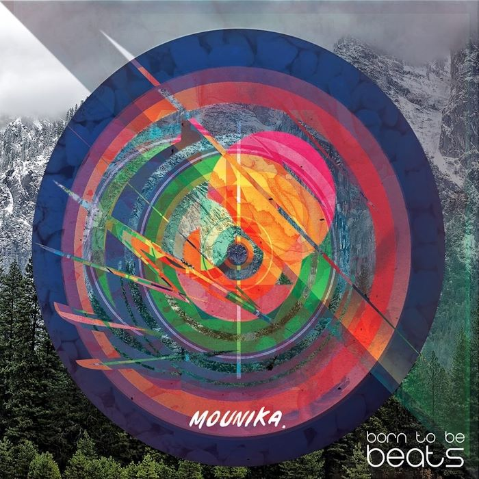

<ion-header [translucent]="true">
  <ion-toolbar color="dark"> <!-- Pour donner un style sombre à ma toolbar -->
    <ion-title>
      Ionic Audio
    </ion-title>
  </ion-toolbar>
</ion-header>

<ion-content [fullscreen]="true">
  <ion-header collapse="condense">
    <ion-toolbar color="dark">
      <ion-title size="large">Ionic Audio</ion-title>
    </ion-toolbar>
  </ion-header>

  <div class="img-box">
    
  </div>

  <div id="container"> <!-- Nouveauté d'ionic 5 l'id container -->
    <h2>Chapitre 3</h2>
    <!-- Barre de progression --> <!-- Mode pour l'apparence android -->
    <ion-range min="0" max="100" value="40" mode="md" color="warning"></ion-range>
    <!-- Temps restants -->
    <p>Temps restant: 3m 10sec</p>

    <!-- Les boutons -->
    <div class="flex-box">
      <!-- Pour sélectionner les icones aller sur https://ionicons.com/ -->
      <ion-button fill="clear" color="light"> <!-- Pour avoir un fond clair -->
        <ion-icon slot="icon-only" name="play-back"></ion-icon>
      </ion-button>

      <ion-button (click)='playPause()' shape="round" color="light"> <!-- Pour avoir un fond clair -->
        <ion-icon slot="icon-only" [name]="playIcon"></ion-icon> <!-- En ajoutant des crochets à l'attribut name je peux lui attribuer une variable. -->
      </ion-button>

      <ion-button fill="clear" color="light"> <!-- Pour avoir un fond clair -->
        <ion-icon slot="icon-only" name="play-forward"></ion-icon>
      </ion-button>

    </div>
  </div>
</ion-content>
